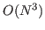
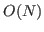
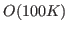
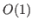

Traditional algorithms for First-Principles Molecular Dynamics (FPMD) simulations only gain a modest capability increase from current petascale computers, due to their

complexity. To address this issue, we are developing a truly scalable FPMD algorithm, based on density functional theory (DFT), with
complexity and controllable accuracy. The computational model uses a general non-orthogonal orbital formulation for the energy functional in the DFT equations, which requires knowledge of selected elements of the inverse of the associated overlap matrix. We present a scalable algorithm for approximately computing selected entries of the inverse of the overlap matrix, based on an approximate inverse technique, by inverting local blocks corresponding to principal submatrices of the global overlap matrix. The new FPMD algorithm exploits sparsity and uses nearest neighbor communication to provide a computational scheme capable of extreme scalability. Accuracy is controlled by the mesh spacing of the finite difference discretization, the size of the localization regions in which the electronic wave functions are confined, and a cutoff beyond which the entries of the overlap matrix can be omitted when computing selected entries of its inverse. We demonstrate the algorithm's excellent parallel scaling for up to
atoms on processors, with a wall-clock time of
minute per molecular dynamics time step.